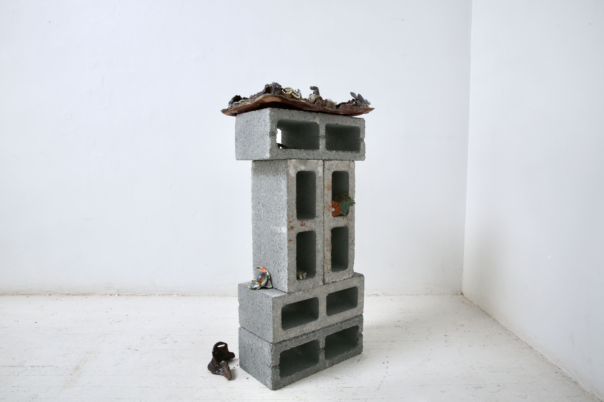

Stoneware, porcelain, glaze, pigment, paper, wood
, 42” x 13” x 19” , 2024
Place of origin: Bucharest, Romania
Current Location: Bucharest, Romania / NYC, USA / Providence, USA

1
Some of my earliest memories are of the bedtime stories told to me by my parents. While mostly tinged with humor and a great sense of pride, the underlying messages were clear. They would recount fighting in the streets of Bucharest as their two small children were home with their grandmothers. Homemade molotov cocktails, tanks rolling through the streets, and giant pots of ciorbă cooked at home only to find no one left on the Square to serve.
I lay listening to these stories in complete awe and sometimes disbelief, comfortably in my brand new water bed in Miami, FL, where we were fortunate to emigrate to.
These subconscious tensions are what drive my explorations and work. As someone born between two worlds, I have always been drawn to examine contradictory situations. Nostalgia and newness, a push and pull between synthetic and organic, ruins and the pristine, the boundaries between meticulous methods and un-calculated spontaneity. I represent these everyday contradictions within a very process-driven practice of layering, manipulating material, and playing with the ways in which these seemingly disparate surfaces and forms interact.
This body of work began as an exercise in building multiples. Inspired by Baroque period architecture encrusted with moldings and fine metal leaf, I sought to reinterpret these repetitive shapes and patterns as lustrous relics which could have been excavated from Atlantis, an imagined time and place.
2
In thinking of the theme of ‘Strangers of Providence’ and my partner Jaewon Hwang’s work. I decided that my work should be viewed in a different context than usual. In the theme of “slowing down” and taking deliberate actions which only serve to fulfill oneself rather than serve as “productivity markers”, I decided to scale back my usual installation to one singular piece meant to be savored with intent.
3
This ceramic panel, resembling a painting or a densely precise coral ecosystem, is perched on top of a form which blurs the line between sculpture and pedestal. The scale of the piece, at an average waist height, and the horizontal placement of the ceramic object on top, encourages the viewer to focus in on its intricate details. This act of viewing and slowing down time for one object inspires both inspection and introspection of thought. Hidden secrets within the piece begin to surface, and one may find themselves imagining their own meaning behind the work.
Patterns on the surface of the pedestal that have been pulled from a 3D scanning software seem like abstract wallpaper at first, but upon further inspection distinguishable forms emerge. I envision these images that I’ve captured as another way to further freeze time, highlighting what is precious in every moment, and creating small time capsules of my everyday life. Similar to Hwang’s work, I’m encapsulating and savoring these moments while attempting to honor them through my process.